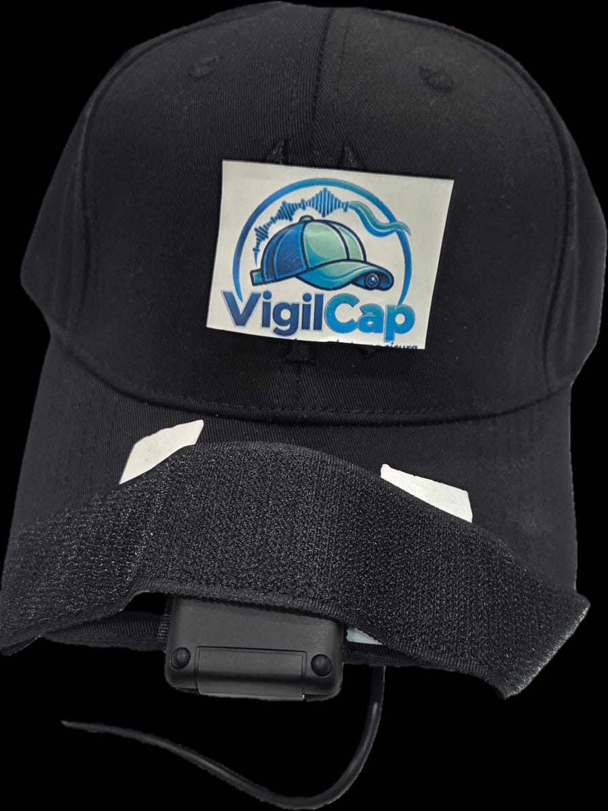

Più sicurezza alla guida. VigilCap è il cappello smart indossabile con telecamera integrata che monitora lo sguardo e l'apertura delle palpebre al volante, intervenendo con un avviso immediato prima che la stanchezza e i colpi di sonno prendano il controllo.

Posizionata sotto il bordo della visiera per inquadrare costantemente gli occhi e rilevare l'apertura delle palpebre senza ostruire in alcun modo la vista del guidatore.
La scheda Arduino (Nano / ESP32 / Uno R4 WiFi) e la batteria sono alloggiati nella fodera traspirante per bilanciare peso e comfort durante i viaggi.
Posizionato sul lato per emettere una frequenza sonora mirata, capace di riattivare subito i riflessi e l'attenzione in caso di pericolo.
La telecamera integrata nel cappello analizza costantemente il comportamento dell'utente, monitorando lo sguardo e la frequenza di chiusura delle palpebre durante la guida.
L'algoritmo elabora i dati in tempo reale: quando rileva segnali concreti di stanchezza (come occhi chiusi per un tempo prolungato), riconosce il rischio di colpo di sonno.
Appena viene rilevato il pericolo, il dispositivo attiva immediatamente il buzzer acustico (e invia una notifica sull'app), facendo risvegliare l'utente in sicurezza.
Non lasciare che la stanchezza prenda il controllo. VigilCap protegge chi guida nei momenti più critici: viaggi lunghi e monotoni, rientro dal lavoro intenso, guida notturna dopo una serata fuori o dopo ore di studio prolungato con il sonno in arrivo.
VigilCap si rivolge a tutti gli automobilisti, con un focus su autoscuole e associazioni stradali per sensibilizzare i neopatentati, e sulle aziende di logistica e trasporti per ridurre i sinistri notturni sulle lunghe tratte.
Un piccolo dispositivo, una grande differenza: è leggero, confortevole, facile da usare su qualsiasi veicolo e garantisce più sicurezza alla guida perché la vigilanza non va in pausa.